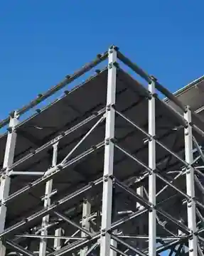

01
Steel Structure & Fabrication
High-precision fabrication of beams, columns, trusses and structural components supported by detailed engineering, CNC machinery and quality controls.
- Structural steel fabrication
- Beams, columns and trusses
- CNC-supported fabrication
- Dimensional checks and quality control